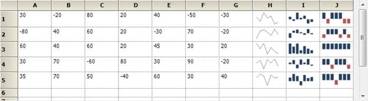

A Sparkline control is a type of information graphic characterized by its small size, high data density and lightweight. It presents trends and variations in a very condensed fashion. The Sparkline does not contain an axis scale and is intended to give a high level overview of what happened to the data over time.
Use Case Scenarios
A sparkline can display a trend based on adjacent data in a clear and compact graphical representation. The purpose of sparkline is to quickly see the data range difference with high density data and it is represented in lightweight graphical representation. You can use it as per your requirement.
The following screenshot shows three types of sparklines, which are drawn inside the grid control cell, based on row values.

Figure 278: Sparkline control in RealTime
Sample Link
To access a Sparkline sample Demo:
1. Open the Syncfusion Dashboard.
2. Select User Interface.
3. Click the WPF drop-down list and select Explore Samples.
4. Browse to the path Chart.WPF\Samples\3.5\WindowsSamples\SparkLine\
 Properties
Properties